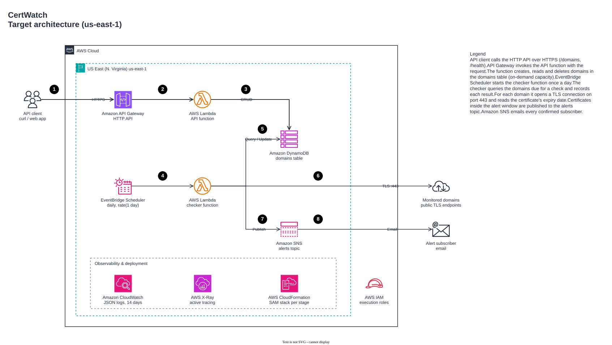

In progress · phases 1–2 of 7 done
CertWatch
A serverless SSL/TLS certificate expiry monitor on AWS. Register the domains you care about; CertWatch checks their certificates every day and emails you before one expires.
- Built: a domain CRUD API on API Gateway (HTTP API), Lambda and DynamoDB, defined with AWS SAM, with unit tests and integration tests against LocalStack.
- Next: daily certificate checks through EventBridge Scheduler with SNS email alerts, then deployment through GitHub Actions with OIDC, so no AWS keys are stored.
- Operable from day one: an IAM role per function, JSON logs kept for 14 days, X-Ray tracing, and secret scanning on every commit.
- AWS SAM
- Python
- API Gateway
- Lambda
- DynamoDB
- EventBridge
- SNS
- LocalStack

